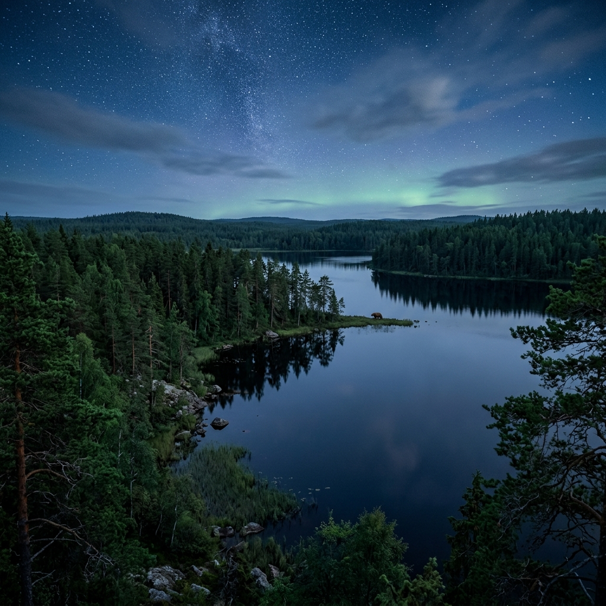

افعال نوع ششم عموماً به -eta یا -etä خاتمه مییابند (مانند vanheta - مسن شدن). در زمان صرف این افعال در حالت شخصی، دو اتفاق میافتد:
ساختار مجهول برای مقالات علمی یا بیانات عمومی بسیار ضروری است. قابل ذکر است که هر ۶ نوع فعل در زبان فنلاندی دارای فرم مجهول خود هستند.
در گفتمانهای نقادانه و تحلیلی، مقایسه پدیدهها الزامی است. فنلاندی مکانیزم منسجمی برای تقابل صفات ارائه میدهد:
حالت جمع پارتیتیو غالباً برای نشان دادن مقادیر ناشناخته، و پس از کمیتسنجهایی از قبیل paljon (تعداد زیاد) و monta (تعدادی از) ظاهر میشود. ساختار پایانی آن میتواند ترکیبی از -a/-ä یا -ta/-tä باشد که نیازمند توجه به حروف مصوت در ریشه واژه است:
ساختار گذشته منفی در زبان فنلاندی با استفاده از فعل کمکی منفیساز (ei) به انضمام اسم مفعول پایه (Partisiippi) شکل میپذیرد.
این بخش شامل واژگان کلیدی درباره طبیعت فنلاند (Luonto)، آبوهوا (Sää) و حیوانات (Eläimet) است که استفاده از آنها برای آزمون ارائه تصویری (Kuvaesitelmä) به شدت توصیه میشود.

این بخش شامل واژگان و اصطلاحات کلیدی در ارتباط با طبیعت بکر و محیط زیست فنلاند میباشد که در توصیف مناظر پرکاربرد هستند.
| Suomi | English | Persian (فارسی) |
|---|---|---|
| Metsä | Forest / Woods | جنگل |
| Järvi | Lake | دریاچه |
| Saari | Island | جزیره |
| Tunturi | Fell / Arctic hill | تپه/کوه قطبی |
| Ranta | Beach / Shore | ساحل |
| Kivi | Stone / Rock | سنگ / صخره |
| Puu | Tree | درخت |
| Ympäristö | Environment | محیط زیست |
| Maisema | Landscape / Scenery | منظره / چشمانداز |
این بخش شامل توصیفات جوی و آبوهوایی است که برای بیان دقیق شرایط فصلی در ویدیوها و تصاویر کاربرد دارد.
| Suomi | English | Persian (فارسی) |
|---|---|---|
| Aurinkoinen | Sunny | آفتابی |
| Pilvinen | Cloudy | ابری |
| Pakkanen | Freezing weather | یخبندان / هوای زیر صفر |
| Sataa lunta | It's snowing | برف میبارد |
| Sataa vettä | It's raining | باران میبارد |
| Tuulinen | Windy | بادی |
| Ukkonen | Thunderstorm | رعد و برق |
این بخش واژگان مربوط به حیات وحش و جانوران را پوشش میدهد که در ارائههای طبیعتمحور ضروری هستند.
| Suomi | English | Persian (فارسی) |
|---|---|---|
| Karhu | Bear | خرس |
| Hirvi | Moose / Elk | گوزن شمالی (الک) |
| Kettu | Fox | روباه |
| Susi | Wolf | گرگ |
| Jänis | Hare / Rabbit | خرگوش صحرایی |
| Lintu | Bird | پرنده |
| Kala | Fish | ماهی |
| Hyttynen | Mosquito | پشه |
بخش عظیمی از ارزیابی تسلط مکالمهای شما در این سطح مبتنی بر Kuvaesitelmä (ارائه تصویری) شکل میگیرد که با رعایت دو اصل بنیادین ارزیابی میشود: